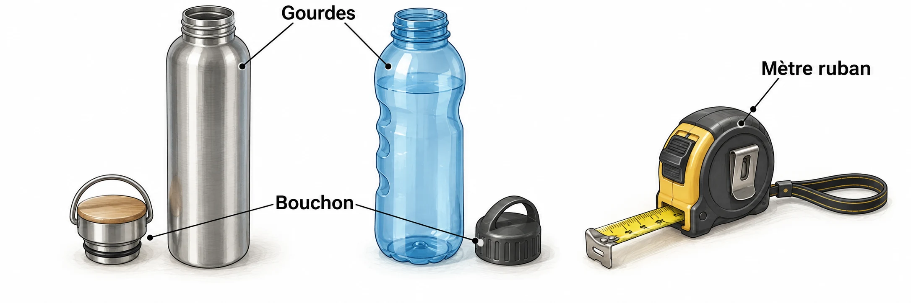

OBSERVER · EXPÉRIMENTER · EXPLIQUER
La gourde change de forme
Le même objet peut changer de matériau ou de fermeture. Change le critère de comparaison.

✎ Garde ta feuille à côté de toi.Ordinateur : manipulations et mesures simulées. Papier : relevés, réponses, calculs et croquis. Matériel réel : essai complémentaire si disponible.
Des observations pour expliquer
- Q1–Q2 : classe puis choisis avec les quatre critères du club.
- Q3–Q4 : prépare tes arguments et ton schéma de cycle de vie.
Appuie ton explication sur une valeur, un changement observé ou une comparaison. Distingue ce que montre le modèle et ce qui reste à vérifier.